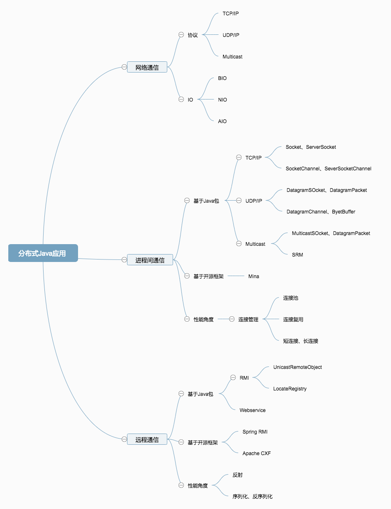
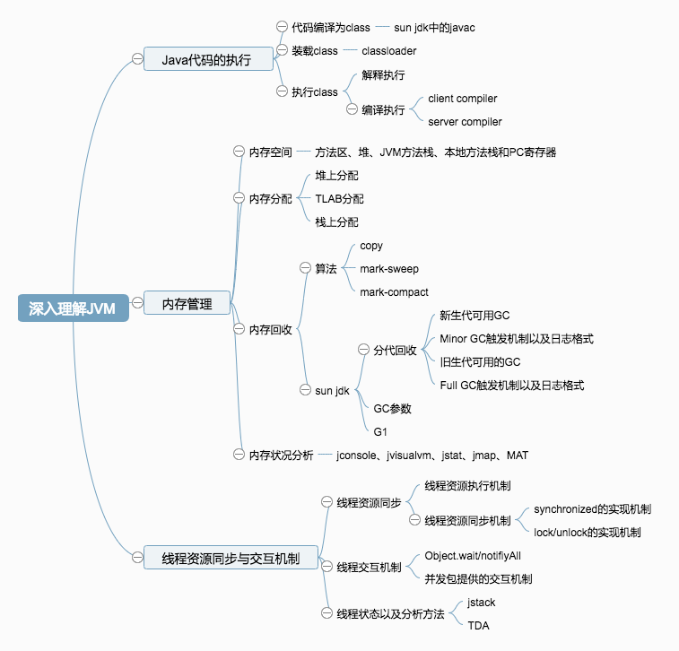

分布式Java应用

基于消息方式实现系统间的通信
当系统之间要通信时，就向外发送消息，消息可以是字节流、字节数组，甚至是Java对象，其他系统接收到消息后进行相应的业务处理。消息方式的系统间通信，通常是基于网络协议实现，常用的实现系统间通信的协议有:TCP/IP和UDP/IP。
TCP/IP和UDP/IP可用于完成数据的传输，但要完成系统间的通信，还需要对数据进行处理。从程序角度而言，BIO就是发起IO的读或写操作时，均为阻塞方式，只有当程序读到了流或将流写入操作系统后，才会释放资源。
NIO是基于事件驱动思想的，实现上通常采用Reactor模式，从程序角度而言，当发起IO的读或写操作时，是阻塞的；当socket有流可读或可写入socket时，操作熊会相应的通知到应用程序进行处理。对网络IO而言，主要有链接建立、流读取或流写入三种事件，Linux2.6以后的版本采用了epoll方式来实现NIO。
另外一种方式AIO。AIO为异步IO方式，同样基于事件驱动思想，实现上采用了Proactor模式。与NIO相比，AIO具有以下特点
- 简化了程序的编写：流的读取与写入都有操作系统来完成
- 省去了NIO程序要遍历事件通知队列(selector)的代价
基于远程调用方式实现系统间的通信
大型分布式Java应用和SOA
基于SCA实现SOA平台
基于ESB实现SOA平台
基于Tuscany实现SOA平台
基于Mule实现SOA平台
深入理解JVM

Java代码的执行机制
JVM内存管理
Java开发人员不需要显式分配内存和回收内存，而是由JVM来自动管理内存的分配及回收。这对开发人员而言大大降低了编写程序的难度，但副作用可能是在不知不觉中浪费了很多内存，导致JVM花费很多时间进行内存的回收。另外还会带来的副作用是由于不清楚JVM内存的分配和回收机制，造成内存泄漏，最终导致JVM内存不够用。因此对于Java开发人员而言，不能因为JVM自动内存管理就不掌握内存分配和回收的知识了。
内存空间
SunJDK在实现时遵守JVM规范，将内存空间划分为方法区、堆、本地方法栈、PC寄存器及JVM方法栈。
方法区
方法区存在了要记在的类的信息、类中的静态变量、类中定义为final类型的常亮、类中的Field信息、类中的方法信息，当开发人员在程序中通过Class对象的getName、isInterface等方法来获取信息时，这些数据都来自于方法区域。方法区域也是全局共享的，在一定条件下他也会被GC，当方法区域要使用的内存超过其允许的大小是，会抛出OutOfMemory的错误信息。
在SunJDK中这块区域对应Permanet Generation，又称为持久代，默认最小值为16MB，最大值为64MB，其可以通过-XX:PermSize及-XX:MaxPermSize来制定最小值和最大值。
堆
堆用于存储对象实例和数组值，可以认为java中所有通过new创建的对象的内存都在此分配，Hep中对象所占的内存由GC进行回收，在32位操作系统上最大为2GB。在64位操作系统上没有限制，其大小可以通过-Xmx和-Xms来控制。
为了让内存回收更加高效，SunJDK自1.2开始对堆采用了分代管理的方式。
- 新生代(New Generation)
大多数情况下，java层序中新建的对象都从新生代中分配内存，新生代由Eden Space和两块相同大小的SurvivorSpace构成，可通过-Xmn参数来制定新生代的大小。 - 旧生代(Old Generation或Tenuring Generation))
旧生代用户存放新生代中经过多次垃圾回收仍然存货的对象，例如缓存对象，新建的对象也有可能在就剩代中直接分配内存。主要有两种情况：一种为大对象，另一种为大的数组对象，且数组中无引用外部对象。
本地方法栈
本地方法栈用于支持native方法的执行，存储了每个native方法调用的状态，在SunJDK的实现中本地方法栈和JVM方法栈是同一个。
PC寄存器和JVM方法栈
每个线程均会创建PC寄存器和JVM方法栈，PC寄存器占用的可能为CPU寄存器或操作系统内存，JVM方法栈占用的为操作系统内存，JVM方法栈为线程私有，其在内存分配上非常高效。
当JVM方法栈空间不足时，会抛出StackOverflowError的错误，在SunJDK中可以通过-Xss来制定其大小。
JVM线程资源同步与交互机制
分布式Java应用和Sun JDK类库
集合包
并发包
序列化与反序列化
性能调优
寻找性能瓶颈
调优
构架高可用的系统
避免系统出现单点
提高应用自身的可用性
构建可伸缩的系统
垂直伸缩
水平伸缩
本博客所有文章除特别声明外，均采用 CC BY-SA 4.0 协议 ，转载请注明出处！